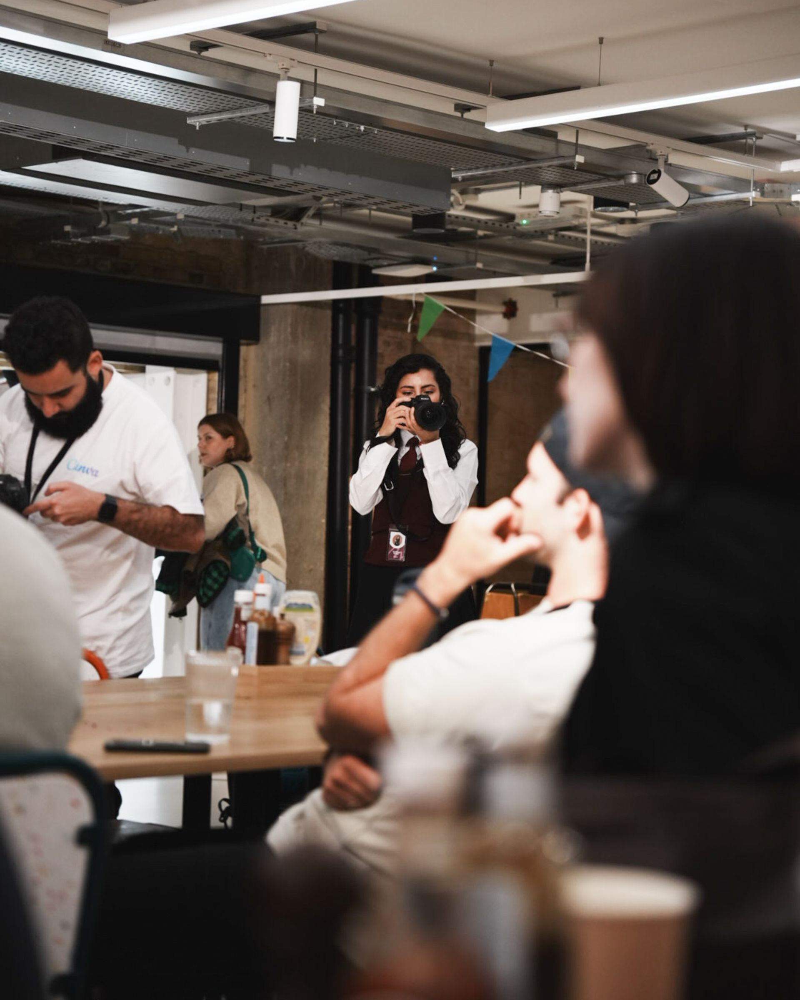
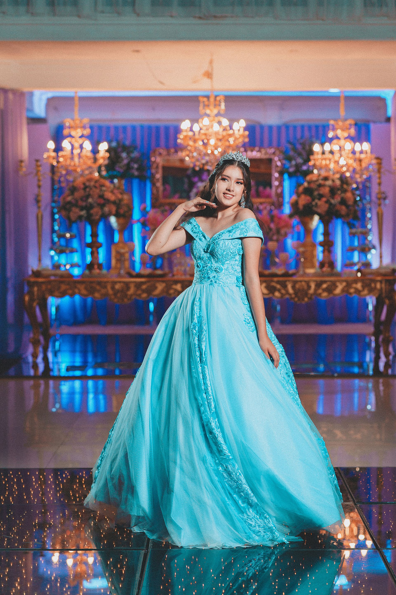
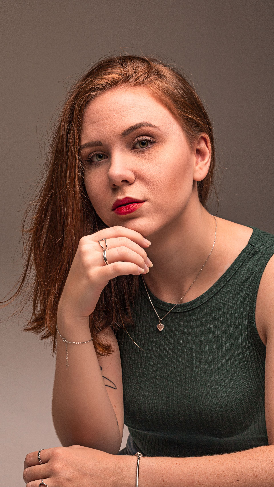
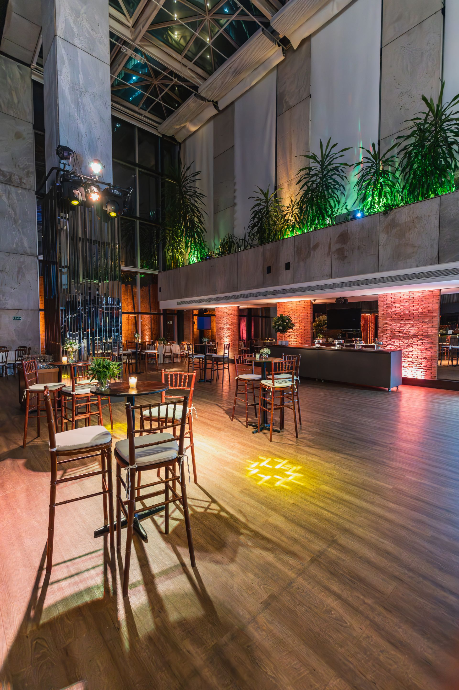

Soy Martín Acosta, fotógrafo profesional independiente. Me dedico a capturar momentos especiales y transformarlos en imágenes que puedan conservarse y disfrutarse con el paso del tiempo. Trabajo con personas, familias y empresas que buscan registrar acontecimientos importantes de una manera profesional, natural y cuidada. Mi objetivo en cada sesión es lograr fotografías que representen la esencia de cada momento y de las personas que lo protagonizan. Me especializo en brindar un servicio personalizado, adaptándome a las características de cada evento y a las necesidades de cada cliente.

Cobertura fotográfica de cumpleaños, aniversarios, fiestas y celebraciones familiares. Registro los momentos principales del evento y también las situaciones espontáneas que surgen durante la celebración.

Cobertura completa de fiestas de 15 años, incluyendo recepción, ceremonia, momentos familiares, invitados, entrada de la cumpleañera y diferentes momentos de la celebración.
Sesiones fotográficas para familias, parejas y grupos. La propuesta busca generar imágenes naturales y espontáneas que permitan conservar recuerdos compartidos.

esiones individuales orientadas a obtener fotografías para perfiles profesionales, redes sociales, emprendimientos, currículums y presentaciones personales.

Registro de reuniones, capacitaciones, inauguraciones, encuentros empresariales y otros acontecimientos relacionados con empresas e instituciones.
Cuento con más de ocho años de experiencia trabajando en fotografía profesional y realizando coberturas de diferentes tipos de eventos. A lo largo de mi trayectoria participé en celebraciones familiares, eventos empresariales y sesiones fotográficas individuales y grupales. Esta experiencia me permitió desarrollar una forma de trabajo basada en la responsabilidad, la organización y la atención personalizada. Antes de cada trabajo converso con el cliente para conocer sus necesidades y definir qué momentos o características del evento son importantes para registrar. Durante la cobertura busco combinar fotografías planificadas con imágenes espontáneas para obtener un resultado completo y natural. Mi compromiso es entregar un trabajo profesional y de calidad, cuidando cada detalle desde la planificación de la sesión hasta la entrega final de las fotografías.